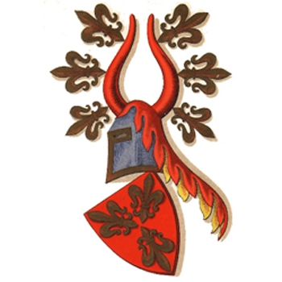

1996106 Christiern Jensen Rud till Hessel
* omkring 1415 Hessel herrgård, Aalsö, Randers, Danmark
† 1479 Hessel herrgård, Aalsö, Randers, Danmark
Blev ca 64 år
* omkring 1415 Hessel herrgård, Aalsö, Randers, Danmark
† 1479 Hessel herrgård, Aalsö, Randers, Danmark
Blev ca 64 år
3992212 Jens Jensen Rud
* omkring 1352 Sankt Povls, Korsör, Danmark
† efter 1414
Hövitsman på Telge
* omkring 1352 Sankt Povls, Korsör, Danmark
† efter 1414
Hövitsman på Telge
7984424 Jens Nielsen Rud
* 1332 Sorö, Danmark
† 1403 Sorö, Danmark
Blev högst 71 år
* 1332 Sorö, Danmark
† 1403 Sorö, Danmark
Blev högst 71 år

7984425 Ailed Clausdatter Grubendahl
* 1334 Själland, Danmark
† 1404 Sorö, Danmark
Blev högst 70 år
* 1334 Själland, Danmark
† 1404 Sorö, Danmark
Blev högst 70 år

15968851 Juliane Jacobsdatter Lunge
* omkring 1316
* omkring 1316

3992213 Else Lauridsdatter Hvas af Ormstrup
* omkring 1395 Ormstrup, Dronningborg, Danmark
† efter 1414
* omkring 1395 Ormstrup, Dronningborg, Danmark
† efter 1414
7984426 Laurids (den yngre) Hvas af Ormstrup
* omkring 1360 Ormstrup, Dronningborg, Danmark
† före 1431 Sahl, Viborg, Danmark
Blev ca 70 år
* omkring 1360 Ormstrup, Dronningborg, Danmark
† före 1431 Sahl, Viborg, Danmark
Blev ca 70 år
15968852 Laurids Hvas
* omkring 1315 Ormstrup, Danmark
† 1371 Sahl, Viborg, Danmark
Blev ca 56 år
* omkring 1315 Ormstrup, Danmark
† 1371 Sahl, Viborg, Danmark
Blev ca 56 år
15968853 Kirsten
† efter 1371
† efter 1371
7984427 Mette Elufsdatter Bild til Dyrnäs og Laven
* omkring 1370 Laven, Skanderborg, Danmark
† före 1412 Ormstrup, Dronningborg, Danmark
Blev ca 41 år
* omkring 1370 Laven, Skanderborg, Danmark
† före 1412 Ormstrup, Dronningborg, Danmark
Blev ca 41 år